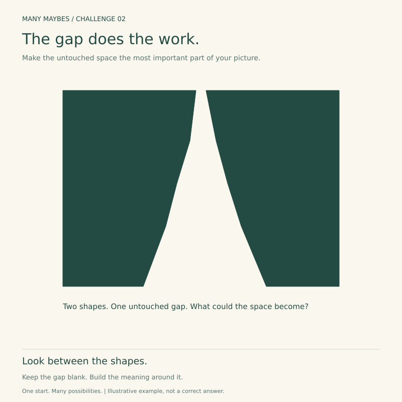
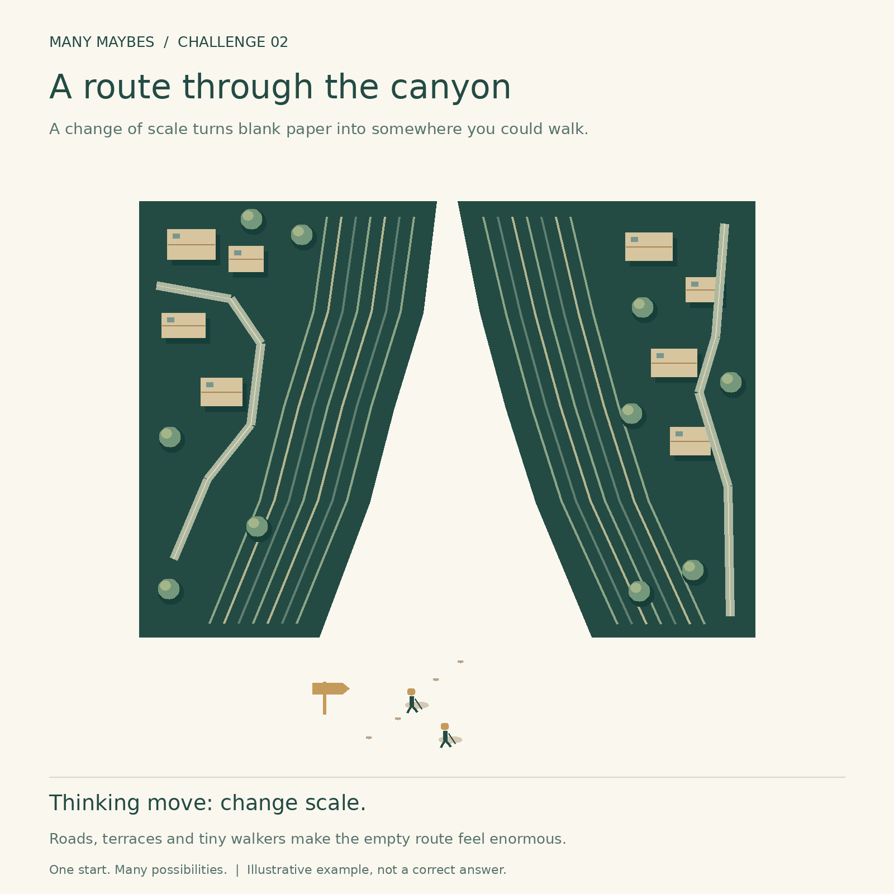
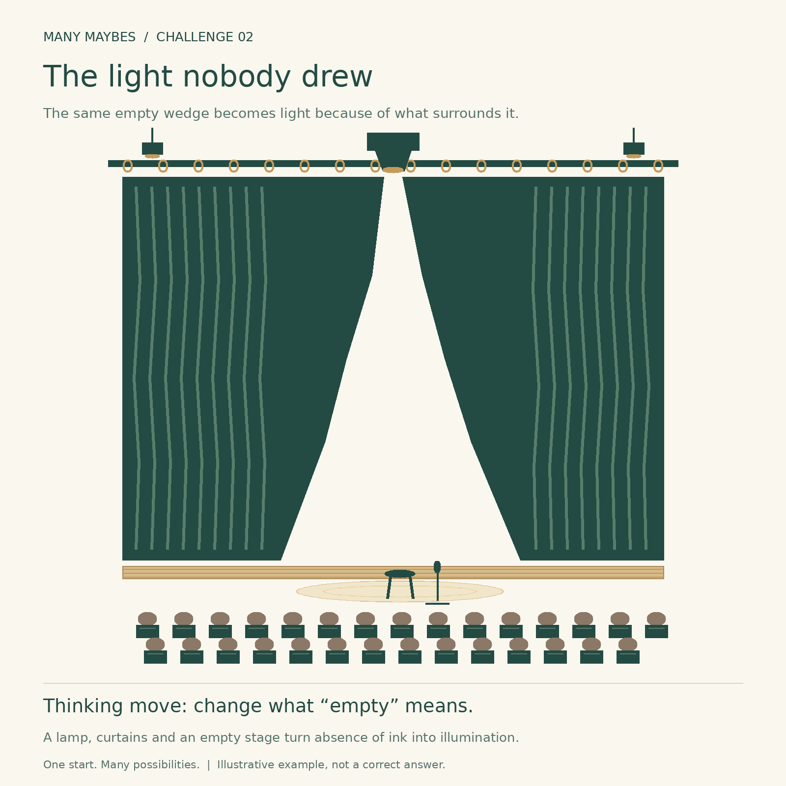
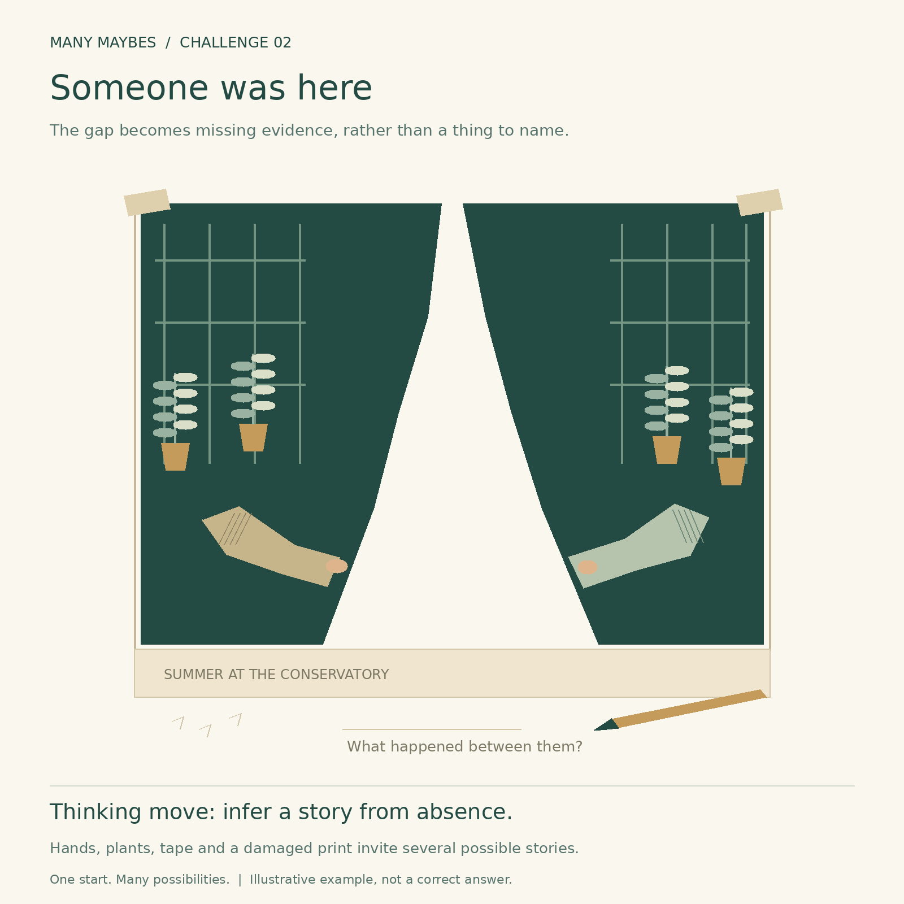

Challenge 02 · Reinterpret negative space
The gap does the work
What could the untouched space between these two shapes become? Make that space the most important part of your picture.

Your challenge
- Keep both original shapes, their filled silhouettes and their relative positions.
- Leave the central gap completely blank: no drawing, colour, words or pasted objects inside it.
- Add details on the shapes and outside the gap. You may rotate or uniformly resize the whole starter.
- First jot down three different roles for the gap; develop one. Artistic polish is optional.
Use freehand tools or turtle code in your browser. No installation or account needed. Keep the gap blank as you draw.


Try before you peek?
Give yourself a few minutes to find three roles for the gap. The examples below are possibilities, not answers. Rough sketches, words outside the gap and collage all count.
A route through the canyon

Illustrative example
Thinking shift: Change scale
Convincing clues: Terraced rock edges, tiny houses, roads and approaching walkers turn the gap into a traversable landscape.
The light nobody drew

Illustrative example
Thinking shift: Change physical meaning
Convincing clues: A light source, curtain folds, a stool, microphone and audience make untouched paper read as illumination.
Someone was here

Illustrative example
Thinking shift: Infer causes from absence
Convincing clues: A damaged print, conservatory plants and two surviving hands turn the missing middle into an open story.
Reflect
What did the surrounding details make you see in the blank space? What other explanation could still fit?
Why this challenge?
Challenge 01 changed the interpretation of marks. Challenge 02 shifts attention from marks to the spaces they define.
Share when ready
Save your sketch and a sentence about what changed. You can share your own work on Instagram and tag @trymanymaybe. Tagging does not automatically add your work to the gallery.
Explore all challenges →